What is a Widget
A TACTIC Widget is a mini web program which serves a specific purpose and can be reused. This is what the TACTIC interface is composed of. Each interface view is presented to a user or a group of users in a combination of widgets which can accomplish many things:
- Displaying data
- Modifying data
- Displaying images
- Executing processes
- Loading files
- Saving files
- …and much more
Each of the widgets is a "snippet" of web code (HTML) which TACTIC builds dynamically on the server and delivers to the user as a web page; but the TACTIC interface is much more than a web page. TACTIC takes full advantage of the newest web technology to deliver a flexible and robust web application.
This widget architecture allows TACTIC to provide a toolbox of useful widgets which can be combined to build an interface which can adapt TACTIC to an work flow. Furthermore, due to the openness of TACTIC, it is easy for developers to create new widgets and share them.
Widget Documentation
Within this documentation, the same philosophy will be followed. There is a section which explains the usage of each widget but the main core of the documentation explains how to use them in combination or with existing interfaces to work with TACTIC.
A few examples of the common TACTIC widgets are:
- ThumbWdg - A thumbnail viewing widget used in a table, usually with a title preview.
- TableLayoutWdg - Majority of the TACTIC interface is delivered through a Table widget. It enables the assembly of different type to save as a new view.
- GanttWdg - A calendar widget which allows viewing and manipulation of dates.

Description
This widget displays the value in the database "as is", in its raw unformatted form. This is the default display widget.
Note
The Simple Table Element widget is the same as the Raw Data widget.
Info
Name | Simple Table Element |
Class | raw_data |
TACTIC Version Support | 3.0.0 \+ |
Required database columns | none |
Implementation
Use this widget to display the value in the database "as is", without any pre-formatting. This widget is the default display widget.
Options
type | The database type: string, text, int, float, boolean, timestamp |
Example
For example, to display the keywords field, as is, from the Edit Column Definition→View Mode: Select Widget → Raw Data → text.
Advanced
Below is the XML for the above example.
<element name="keywords" title="test" edit="true" color="false">
<display widget="raw_data">
<type>text</type>
</display>
</element>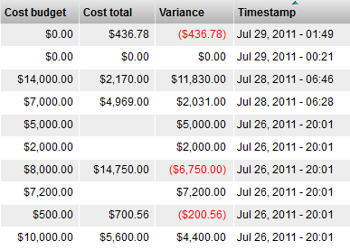
The Formatted Widget displays a raw data value as a formatted string so the user can recognize and interpret the value more easily.
For example, the Format Widget will display a number in the format $1,234.00 which the user quickly recognizes as a currency value in dollars and cents.
Name | Formatted Widget |
Class | FormatElementWdg |
Category | Simple Table Element Widget |
Supported Interfaces | [] |
TACTIC Version Support | 3.6.0+ |
Required database columns | none |
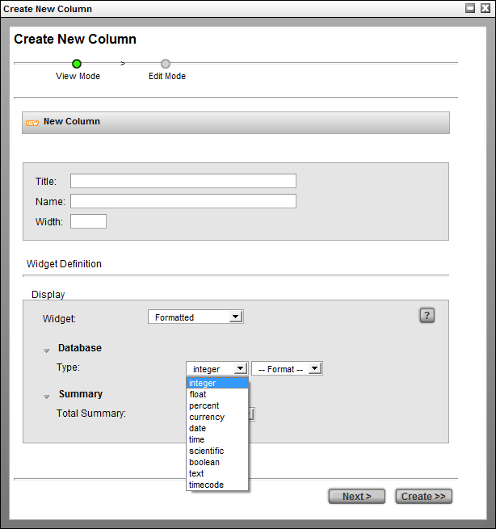
integer | 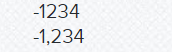 |
float | 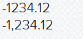 |
percent | 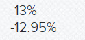 |
currency | 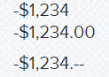 |
date | 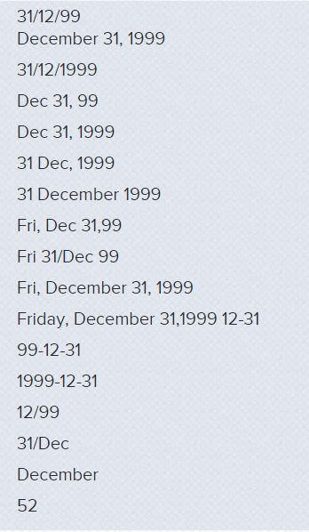 |
time | 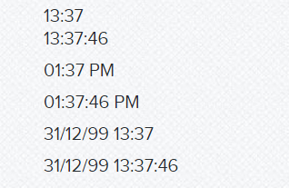 |
scientific | 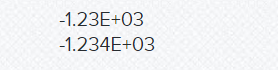 |
boolean | 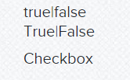 |
timecode | 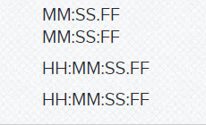 |
Expression

Description
The ExpressionElementWdg allows you to use the TACTIC expression language to determine the value displayed in the table cell. The expression is caclulated from a starting sobject which represents the sobject in the particular row in the table. The expression is evaluated for each sobject on every row. When an expression is evaluated, the value is added to a dynamic attribute of the sobject and can be used in future expressions in this widget. Please refer to the expression language reference for more information on the expression language.
Info
Name | ExpressionElementWdg |
Class | tactic.ui.table.ExpressionElementWdg |
Category | Common Columns |
Supported Interfaces | TableLayoutWdg |
TACTIC Version Support | 2.5.0 |
Required database columns | depends on expression |
Implementation
Display the total cost of an item by multiplying the total_number column with the unit_cost column When an expression is evaluated by the ExpressionElementWdg, a new attribute with the name of the element is dynamically added to the sobject (in this cost) which can be used in the "bottom" directive.
<element name='cost'>
<display class='tactic.ui.table.ExpressionElementWdg'>
<expression>@GET(.total_number) * @GET(.unit_cost)</expression>
<bottom>@SUM(.cost)</bottom>
</display>
</element>Options
expression | Expression to evaluate the widget |
display_format | Display format string like DATETIME, DATE, -$1,234 applicable for various Formatted Element can be used here. |
inline_styles | Styles to add to the DIV generated that contains the result of the expression |
return | single |
list - Determines what the expression return type should be | bottom |
Expression to calculate the bottom row of the table | group_bottom |
Expression to calculate the group bottom row of the table | mode |
value | boolean |
check | icon - Display mode for this widget |
expression_mode | default |
absolute - If absolute mode is selected, it does not relate to the current SObject | calc_mode |
fast | slow - fast uses new calculation mode. Only @SUM, @COUNT, @SOBJECT and @GET are current supported |
enable_eval_listener | Currently javascript expression evaluation is not fully baked, so only use the client side evaluation listener when needed and NOT by default |
icon_expr | Expression to evaluate which icon to use when mode = icon |
order_by | provide a simple string to order by e.g. code or by an attribute in a related sType in the same database, e.g. prod/sequence.dsecription |
group_by | true |
false - Turn on group by in context menu if set to true | group_by_time |
true | false - Turn on group by time options in context menu if set to true |
justify | default |
left | right |
Examples
Display the number of tasks for a given sobject and then display the total number at the bottom.
<element name='num_tasks'>
<display class='tactic.ui.table.ExpressionElementWdg'>
<expression>@COUNT(sthpw/task)</expression>
<bottom>@SUM(.num_tasks)</bottom>
</display>
</element>Mode "boolean" displays a green dot for every sobject that has an expression that evalutes to True. In this case, a green dot is display on every row where the number of tasks is greater than zero.
<element name='has_tasks'>
<display class='tactic.ui.table.ExpressionElementWdg'>
<expression>@COUNT(sthpw/task) > 0</expression>
<mode>boolean</mode>
</display>
</element>Another example of a mode which displays a checkbox instead of red/green dots. The checkbox appears for any result greater than zero
<element name='has_tasks'>
<display class='tactic.ui.table.ExpressionElementWdg'>
<expression>@COUNT(sthpw/task) > 0</expression>
<mode>check</mode>
</display>
</element>The expression language has the ability to get values from other related tables. The following example illustrates an expression to find the description of the parent sequence of a shot.
<element name='sequence_description'>
<display class='tactic.ui.table.ExpressionElementWdg'>
<expression>@GET(prod/sequence.description)</expression>
</display>
</element>The expression language has the ability to get values from other related tables and format it using the DATETIME project setting which can be customized per project
<element name='task_due_date'>
<display class='tactic.ui.table.ExpressionElementWdg'>
<expression>@GET(sthpw/task.bid_end_date)</expression>
<display_format>DATETIME</display_format>
</display>
</element>Ultimately, the ExpressionElementWdg can make use of any expression in the TACTIC Expression Lanaguage.
When using mode = icon, it is possible to set up an expression using icon_expr to determine what that icon should be. A special variable $VALUE is used to determine the value of the expressions
<element name="is_synced" title='Synced' edit='false'>
<display class='tactic.ui.table.ExpressionElementWdg'>
<expression>@GET(.is_synced) == True</expression>
<mode>icon</mode>
<icon_expr>@IF( '$VALUE' == True, 'CHECK', 'CROSS' )</icon_expr>
</display>
</element>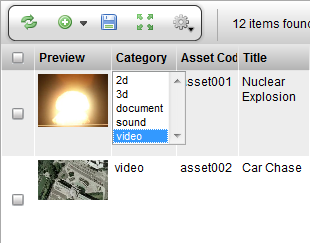
Description
The Select Widget is a simple widget version of an HTML drop down selection box. The widget is used for making a selection from a predefined list of items. Many built-in dropdown widgets in TACTIC extend from the Select Widget.
Info
Name | Select Widget |
Class | SelectWdg |
TACTIC Version Support | 2.5.0 \+ |
Required database columns | None, but typically this is attached to a data column |
Usage
Usage of the Select Widget is straightforward. Simply click on the Select Widget button to open the drop down selection box. Then, select one of the menu items. Sometimes items are grouped and separated by a group label represented as << label>>. In that case, selecting the group label will trigger a warning pop-up. To unset a value, you can usually select the empty value with the label -- Select --.
Implementation
The select is often setup in the Edit Column definition → Edit Tab. It is edited for the state for column data where the user should only be able to choose from a list of predefined values.
Options
values | A list of data values separated by the pipe character |, e.g. model|anim|lighting |
labels | A list of display labels separated by the pipe character |, e.g. Model|Anim|LGT |
empty | When set to true, the Select Widget will contain an empty option. |
values_expr | This serves the same purpose as values but in the form of an expression. The input item of the expression has to exist for this to function properly.(ie @GET(vfx/sequence.code) ). If it is used in the menu of an item in insert mode, you should set mode_expr to absolute |
labels_expr | This serves the same purpose as labels but in the form of an expression. The input item of the expression has to exist for this to function properly (ie @GET(vfx/sequence.name) ). If it is used in the menu of an item in insert mode, you should set mode_expr to absolute |
mode_expr | If left unset, the default is to use the current item in the expression defined in values_expr and labels_expr. If set to absolute, the input item for the expression will be an empty list. |
query | In the form of <search_type>|<value>|<label>, you can instruct the widget to retrieve the values and labels from the a particular sType. For example, to get all the asset codes from the sType vfx/asset, you can use vfx/asset|code|code. To change the label to display asset’s name instead, you can use vfx/asset|code|name. |
Advanced
The following example uses the query option to get the code of a parent shot item but, display the name value in the list. This query option is older. The values_expr and labels_expr option are preferred.
<element name="parent_code">
<display class="SelectWdg">
<query>prod/shot|code|name</query>
</display>
</element>The following gets the same result but, uses expressions. This allows for more robust queries for values and labels.
<element name="parent_code">
<display class="SelectWdg">
<mode_expr>absolute</mode_expr>
<values_expr>@GET(prod/shot.code)</values_expr>
<labels_expr>@GET(prod/shot.name)</labels_expr>
</display>
</element>The following sets a hard coded list of values and labels for the SelectWdg.
<element name="status">
<display class="SelectWdg">
<values>waiting|in_progress|complete</values>
<labels>Waiting|In Progress|Complete</labels>
</display>
</element>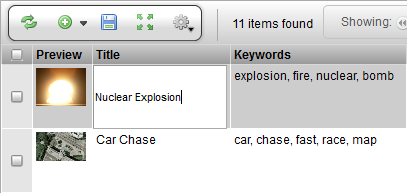
Description
The TextWdg is a basic form element in which a single line of text can be entered. (To enter multiple lines, use the TextAreaWdg instead.) It maps directly to the HTML text input. It can be used independently or as an edit element in the TableLayoutWdg or EditWdg.
Info
Name | Text Input |
Class | pyasm.widget.TextWdg |
TACTIC Version Support | 2.5.0 |
Required database columns | none |
Implementation
Basic example of a typical usage of a TextWdg
Options
size | Determine the width of the text widget. Default is "50". |
read_only | true |
Advanced
Simple example which displays text widget that is fully editable:
<element name='first_name'> <display class='pyasm.widget.TextWdg'/> </element>
A text widget that only allows integer input. The size is reduced to 5.
<element name='age'>
<display class='pyasm.widget.TextWdg'>
<size>5</size>
</display>
</element>A simple example of the TextWdg in Python:
from pyasm.widget import TextWdg
div = DivWdg()
text_wdg = TextWdg("age")
text_wdg.set_option("size", "20")
div.add(text_wdg)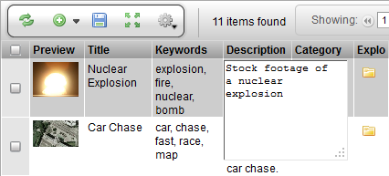
Description
The TextAreaWdg is a simple text widget which is used for editing full-text. The widget supports using the ENTER key for adding new lines (the ENTER key is often not supported on text entry widgets where CTRL+ENTER is used.) This widget can also be configured to display a larger canvas to work on.
Info
Name | TextAreaWdg |
Class | pyasm.widget.TextAreaWdg |
TACTIC Version Support | 2.5.0 |
Required database columns | requires a database column for storing the text data. |
Implementation
The TextAreaWdg is used in Edit scenarios where full text input is required. There is control for the columns (characters across) and rows (characters down).
Options
cols | The number of character columns in the TextArea |
rows | The number of character rows in the TextArea |
Advanced
The following example is a default implementation. The default number of cols is 50 and the default number of rows is 3.
<element name="subject"> <display class="TextAreaWdg"/> </element>
The following example creates a large text area which could be used for writing large amounts of full-text.
<element name="summary">
<display class="TextAreaWdg">
<cols>100</cols>
<rows>30</rows>
</display>
</element>Calendar Input Widget
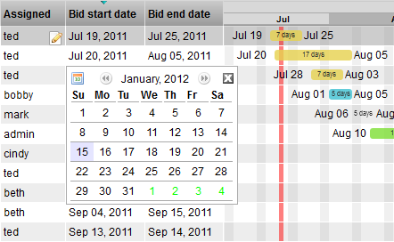
Description
The CalendarInputWdg displays a navigable calendar where dates can be selected. It is an input widget that conforms to the BaseInputWdg interface and is used for inline editing or as one of the items in the EditWdg layout.
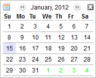
Info
Name | Calendar Input |
Class | tactic.ui.widget.CalendarInputWdg |
Category | Input widget |
Supported Interfaces | EditWdg, TableLayoutWdg (edit view) |
TACTIC Version Support | 2.5.0 |
Required database columns | none unless editing a specific date column |
Implementation
The simple implementation does not require any options. It displays a non-editable text box with a value that represents a date. Clicking on the cell opens up the calendar widget.
Options
first_day_of_week | Integer representing first day of the week (0=Sunday, 6=Saturday) |
read_only | Sets the widget to be read only. In read-only mode, clicking on the cell does not bring up the calendar for input. Only a text box with the date value is displayed. |
Advanced
The simplest and most common usage is the default implementation.
<element name='start_date'> <display class='tactic.ui.widget.CalendarInputWdg'/> </element>
To set the work week to start on a different day than Sunday, change the first_day_of_week . This option is an integer which represents the days of the week where 0=Sunday and 6=Saturday.
<element name='start_date'>
<display class='tactic.ui.widget.CalendarInputWdg'>
<first_day_of_week>6</first_day_of_week>
</display>
</element>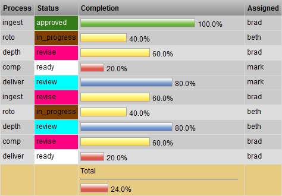
Description
The Task Completion Widget provides a graphical bar chart to represent the progress of an item by the completion rate of its child tasks.
Info
Name | Task Completion Widget |
Common Title | Task Completion Widget |
Class | tactic.ui.table.TaskCompletionWdg |
TACTIC Version Support | 2.5.0 |
Required database columns | none |
Usage
This is a display-only widget. If all the tasks are completed for a shot, the bar reading would be 100%. Otherwise, a partial completion would be calculated based on tallying all the child tasks. If there are no tasks for the item, "No tasks" is displayed.
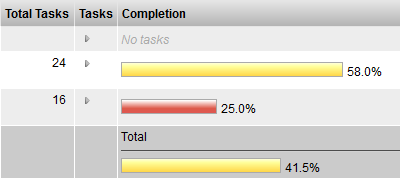
Implementation
It is a common column that can be added using the Column Manager. The item name is "completion".
Options
task_expr | An expression to get to the tasks relative to the current sObject. e.g. @SOBJECT(prod/shot.sthpw/task) |
Advanced
<element name="completion" edit="false">
<display class="tactic.ui.table.TaskCompletionWdg"/>
</element>How The "Completion" is Calculated
Example 1:
Let’s say that we have a task in a pipeline with the following processes:
4 processes: Design, Rough, Modeling, Delivery
Let’s say that for each process, there are:
4 statuses: Unassigned, In Progress, Ready_for_Review, Approved.
If the task is in the status: Unassigned, the task is 0% complete.
If the task is in the status: Started, the task is 33.3% complete.
If the task is in the status: Ready_for_Review , the task is 66.6% complete.
If the task is in the status: Approved, the task is 100% complete.
Let’s say the task in the Rough process has the status Approved. That means that is 100% complete for the Rough process. In the other 3 processes, it is at Unassigned, which is 0% complete.
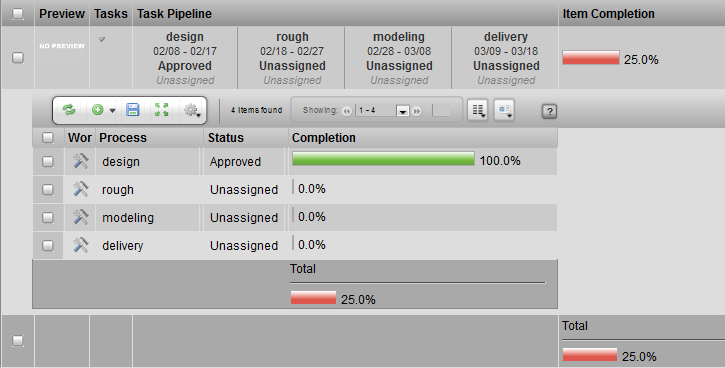
Then, the TOTAL completion would be (1.0 + 0 + 0 + 0 ) / 4 = 25% complete.
Example 2:
Using the same process and task statuses, let’s say the task in the Rough process has the status Ready_for_Review. That means that is 66% complete for the Rough process. In the other 2 processes, it is at Started, which is 33.3% complete. In the last processes, it is at Unassigned, which is 0% complete.
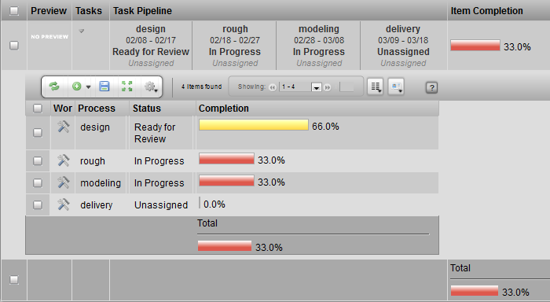
Then, the TOTAL completion would be (0.666 + .333 + .333 + 0 ) / 4 = 33.3% complete. .
Explorer Button
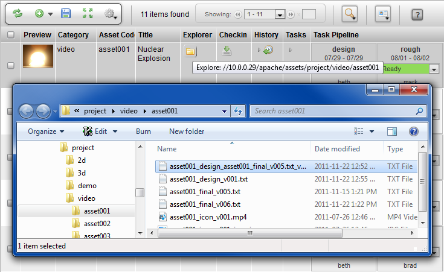
Description
The Explorer Widget can be configured to launch Windows Explorer for Windows (or Finder for OSX). It can be configured to open to a directory which is either the sandbox or to the repository of the corresponding item.
Info
Name | Explorer |
Class | tactic.ui.table.ExplorerElementWdg |
Category | Common Columns |
TACTIC Version Support | 3.0+ |
Required database columns | none |
Implementation
When added to the view, the Explorer Widget button is represented as an icon of a folder. The button opens up Windows Explorer (or Finder on OSX). This gives the user a quick starting point for navigating to a directory that is relevant to the corresponding item. The convenience is greater when the repository contains a lot of items or the directory folder structure is very deep. Users save time by not having to navigate through endless directories to get to where they need to go to do work.
By default, the Explore Widget opens a window to the corresponding item if it exists in the user’s sandbox.
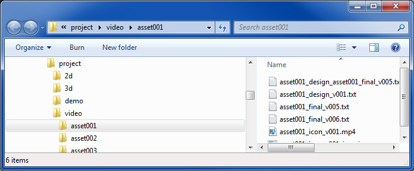
Options
mode | sandbox |
Advanced
The following example configures the Explorer Widget to browse to the assets directory as specified in the Tactic Config File
<element name='explorer'>
<display class='tactic.ui.table.ExplorerElementWdg'>
<mode>client_repo</mode>
</display>
</element><element name='explorer'> <display class='tactic.ui.table.ExplorerElementWdg'/> </element>
General Check-in Widget

Description
This is the new preferred Check-in Widget for 3.7+. It makes use of the Java Applet to accomplish various kinds of check-in functions like checking in a single file, sequences of files, or directories. The copy or preallocate transfer mode should be used when dealing with a large file transfer. Upload transfer mode only supports checking in single files and sequences of files. Upload is set to be the default in case new users do not have the handoff directory readily set up.
Info
Name | General Check-in Widget |
Class | tactic.ui.widget.CheckinWdg |
Category | Widget |
Supported Interfaces | TableLayoutWdg |
TACTIC Version Support | 3.7.0 |
Required database columns | none |
Options
transfer_mode | upload, copy and move are supported. copy is recommended for most situations when users are usually granted only read access to the TACTIC asset repo. (default is copy) |
mode | sequence, file, dir, and add are supported. sequence is for file sequence checkin; file is for single file checkin; dir is for directory checkin; and add is for appending file or dir to an existing snapshot. If not specified, multiple selections will be available for the user to choose. Note: upload transfer mode only supports single file or file sequence checkin. |
checkin_script_path | a custom checkin script path to specify an override on what functions get called during a checkin. Note: If trying to do some preprocessing with the file or directory before checking in, just make use of validate_script_path function using Client Trigger. Client Trigger works by setting up this check-in script as a Client Trigger callback that affects the search type rather than just a column definition. |
validate_script_path | a script path pointing to a JavaScript file that is run before the actual checkin. If it throws an error using "throw(<error message>)", the checkin will not initiate. This path can also use it to run some client-side preprocessing of the file or directory. It is not set up as a display option but rather as a Client Trigger callback. |
checkout_script_path | a custom check-out script path to specify to override what happens during a check-out. |
process | If set, the process specified will be pre-selected when the General Check-in Widget is drawn, |
lock_process | If set to true, the user will not be able to choose a different process during a checkin, in the General Check-in Widget |
show_context | When set to true, the context will be displayed to the user. (default is false) |
Gear Menu Options
The Gear Menu in the Check-in Widget provides the following administration options:
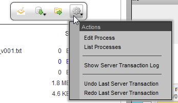
Edit Process | Load the process options pop-up. The process and subcontext options are described further in the sections below |
List Processes | List all of the processes for the current pipeline. This provides the same access to the as the Edit Process option but for all processes. |
Show Server Transaction Log | Show the standard server transaction log |
Undo Last Server Transaction | Undo the last transaction. When undoing a checkin, the files will also be removed in the file system. |
Redo Last Server Transaction | Redo the last transaction. When redoing a checkin, the files will be restored in the file system. |
Implementation
The default settings will allow a user to check in files to an assets in the "publish" process. It provides a very general and loosely enforced workflow to check in and manage files. Often, it is required, that a particular process has very strict enforcement of naming conventions and check-in procedures.
The General Check-in widget is highly configured and can be tuned precisely for each part of the process. The various customizations can fall into the following categories:
Validation, Subcontext options, Custom interface, Custom check-in script, Naming conventions
Each of these can be customized for the particular widget or at the process level.
Validation
Validation is a custom script that will is run before the check-in process occurs. It provides the ability to check that all files in the checkin conform to some custom logic required for a successful checkin. If the validation script fails, then the entire checkin is aborted.
Client Side Triggers
A client trigger set up allows control over what check-in script or validate_checkin script to call during a checkin. Here is an example of how to set the checkin/validate_folder script to run before the check in of prod/asset. The event name is CheckinWdg|validate_script_path|<search_type>. If only a particular process is desired to be run on check in for, like "texture", the event name would become CheckinWdg|validate_script_path|prod/asset|texture. To override the checkin_script_path, use the event CheckinWdg|checkin_script_path|<search_type>. If this event-based set-up seems a bit too involving, override the checkin_script_path for just this instance of the widget by using the standard display option <checkin_script_path>.
Process Options
By default, the subcontext selection is set to (auto). It is the simplest to use and allows TACTIC to auto generate the subcontext. Because the subcontext is auto generated, strict naming conventions for the file are often sacrificed for ease of use. By default, the checked in file will just have a version number attached to it.
It is possible to force a limited list of subcontext options on a particular checkin. This means that the files checked in will be named according to the subcontext selected and provides a limited set of approved containers in which files can be checked in.
Process/Context/Subcontext
Checkin’s are always categorized by process. If there is no pipeline defined, the default process "publish" will be used. Categorizing checkin’s by the process in the pipeline of an asset organizes the work done for an asset according to its product life cycle.
Another important attribute of a checkin is the context. Assets are versioned according to their context which provide a namespace for versioning checkin’s of an asset. All checkin’s of an asset with the same context are versioned together. The context of an asset is a particular way to view an asset.
For example, a 2D drawing of a character and a 3D model of the same character represent the same abstract asset, so are two different contents of the asset. This can be implemented in TACTIC by specifying the following in the Check-in Widget’s Context Options:
Context Options: 2D_drawing|3D_model
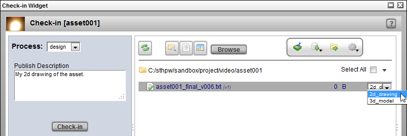
Although the context can be any string, most often, it is built up from other parameters. The convention usually used is "<process>/<subcontext>". All of TACTIC’s built-in check-in tools assume this relationship. The subcontext provides a namespace for checking in multiple subcategories of files within a single context.
The following is an example of these subcontext options:
Subcontext Options: hi|med|low
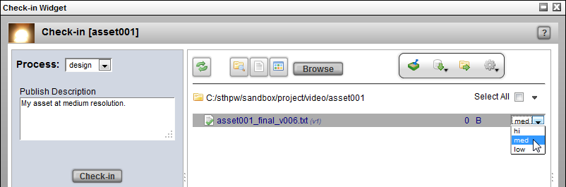
Naming conventions are often strictly enforced, meaning that the folder and the file name are automatically supplied on check in of a file to the central repository.
Default Check-in Widget Options
In the panel on the right, when something from the list is selected for check in, the corresponding Check-in type (e.g.. file, directory, sequence, multiple individual files) is automatically selected by the Check-in Widget.
For example, on the panel on the right, if a file is selected for check in, the Check-in type will automatically switch to A File under the Check-in Options on the bottom left:
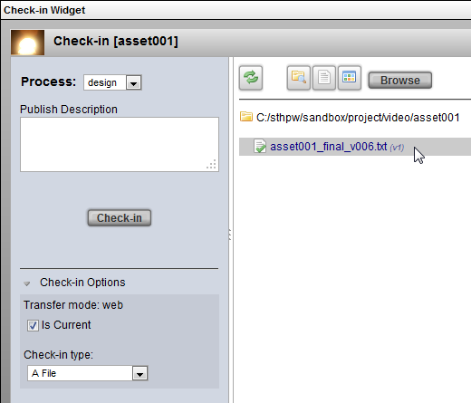
For example, if a folder is selected to check in on the right panel, the Check-in type will automatically switch to A Directory under the Check-in Options on the bottom left:
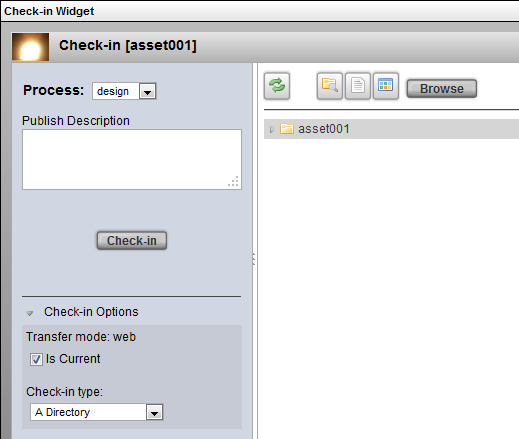
More Context and Subcontext Examples
Example 1)
To check in high resolution and low resolution files for a model process, first specify the context_options under:
Checkin Widget → Gear Menu → Edit Process:
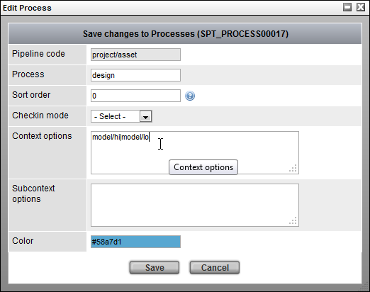
Specify the following Context Options:
Context Options: model/hi|model/lo
OR specify the following Subcontext Options:
Subcontext Options: hi|lo
Both of the choices above give the same result.
Result:
process = model context = model/hi (or model/lo)
Only use either the context field or the subcontext field but not both fields.
Note
If values are specified for both the context_options and the subcontext_options, only the context_options will be used (the subcontext_options will be ignored).
Example 2)
To provide the same options (hi and lo) and avoid using subcontexts specify the following context_options:
context_options: model_hi|model_lo
Result:
process = model context = model_hi (or model_lo)
Notice that the forward slash / was not used, which avoids using subcontexts.
Example 3)
The following is another example of how to avoiding using subcontexts altogether.
To check in a proxy and a staging context for a model process, specify the following context_options:
context_options: model_proxy|model_staging
Result:
process = model context = model_proxy (or model_staging)
Again, notice that the forward slash / was not used, which avoids using subcontexts.
Subcontext Keywords: (auto), (main) and (text)
The following subcontext option keywords are supported:
(auto) | Uses the filename as the subcontext (auto is the default if no values are specified for the context or subcontext options) |
(main) | Uses the process as the context |
(text) | Allows the user to specify their own context for the file to check in |
Example for (auto):
process: | design |
filename: | my_checkin_file.txt |
subcontext option selected: | (auto) |
Result:
context = design/my_checkin_file.txt
Example for (main):
process: | design |
subcontext option selected: | (main) |
Result:
context = design (because is the process)
Example for*(text)*:
To check in different colors of a car for the design process eg. a green version of the car and a red version
process: | design |
subcontext option selected: | (text) |
custom context inputted | green |
Result:
context = design/blue
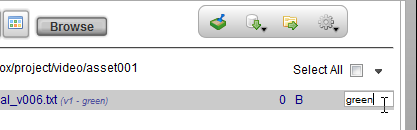
Providing a Custom Layout View For the Check-in Options
A custom layout view can be provided in the check-in panel as options.
For example, to provide check boxes during the check in to submit the job to the render farm or to submit the file for the review process, create a custom view and specify the view in the Check Options View.
To do this, first, create a custom view under:
Admin Views → Project → Widget Config
Below is an example of a custom layout view:
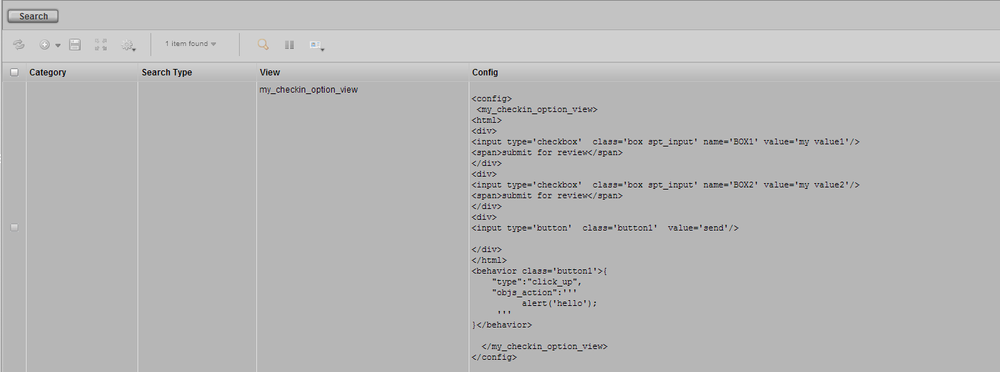
note:
In the example custom view above, to make use of these custom UI check boxes, more work needs to be done to override the checkin_script or checkin_validate_script.
The checkin_script and the checkin_validate script can be found under: Checkin Widget → Gear Menu → List Processes
Example validate scripts can be found at the end of this Check-in Widget doc in the section labeled Example Scripts: Example 1 and 2.
Then, specify the name of the view under:
Checkin Widget → Gear Menu → List Processes

In the Check-in Options View, specify the name of the custom layout view for the check-in options:
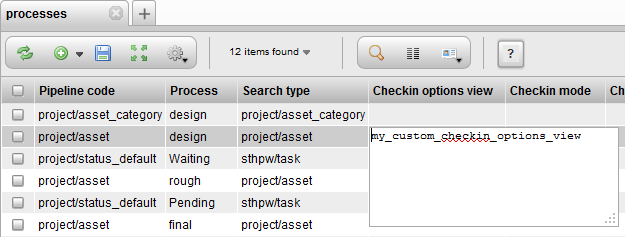
Finally, select a file to check in, the custom view with the check-in options will appear on the panel on the left.
Without custom check-in options: | With customer check-in options: |
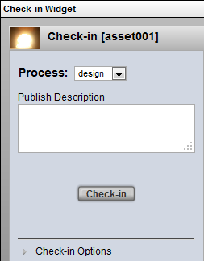 | 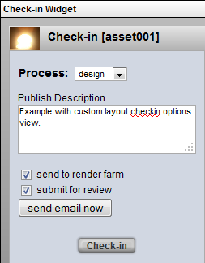 |
Script Samples
This script can be saved in the Script Editor accessible through the Gear Menu.
Example 1: checkin/validate_folder
var values = bvr.values;
var file_path = values.file_paths[0];
var sk = values.search_key;
var applet = spt.Applet.get();
var file_list = applet.list_dir(file_path);
for (var i=0; i <file_list.length; i++){
var base =spt.path.get_basename(file_list[i]);
if ( base == 'DATA') {
throw('it contains a DATA folder. Checkin aborted');
}
}Example 2: checkin/validate_file
var values = bvr.values;
var file_path = values.file_paths[0];
var sk = values.search_key;
var applet = spt.Applet.get();
var base =spt.path.get_basename(file_path);
if ( base.test(/\\.mov$/)) {
throw('it does not have a mov extension. Validation failed.');
}Example 3: Custom checkin_script using display option "checkin_script_path". Also retrieving and showing the values of checkboxes. The default snapshot_type is file, if the file extension is .mov, the snapshot_type is set to mov.
var file_paths = bvr.values.file_paths;
var description = bvr.values.description;
var search_key = bvr.values.search_key;
var context = bvr.values.context;
var transfer_mode = bvr.values.transfer_mode
var is_current = bvr.values.is_current;
var path = file_paths[0]
spt.app_busy.show("File Checkin", path);
var values_dic = bvr.custom_options;
console.log(value_dic);
var snapshot_type = 'file';
if (path.test(/\\.mov$/)){
snapshot_type = 'mov';
}
var server = TacticServerStub.get();
snapshot = server.simple_checkin(search_key, context, path,
{description: description, mode: transfer_mode, is_current: is_current,
snapshot_type:'mov'});Advanced
The General Check-in Widget is usually invoked with a CheckinButtonElementWdg with a transfer mode specified. In this implementation, the process will be preselected as "texture", providing the pipeline for this sObject does contain a process named texture.
<element name='general_checkin' title=' '>
<display class='tactic.ui.widget.CheckinButtonElementWdg'>
<transfer_mode>copy</transfer_mode>
<process>texture</process>
</display>
</element>In this implementation, the process will be preselected as "model", providing the pipeline for this sObject does contain a process named model. The user cannot switch to other processes in the pipeline, and only "New Directory" mode can be selected.
<element name='general_checkin' title=' '>
<display class='tactic.ui.widget.CheckinButtonElementWdg'>
<transfer_mode>copy</transfer_mode>
<process>model</process>
<lock_process>true</lock_process>
<mode>dir</mode>
</display>
</element>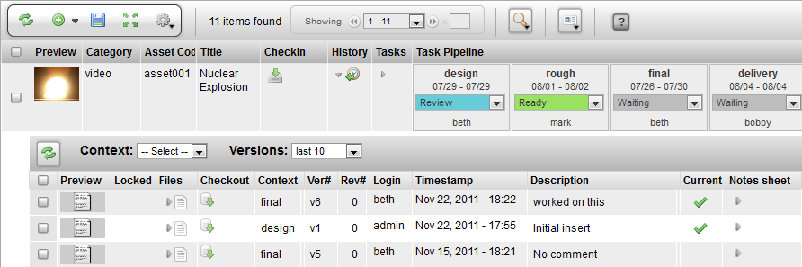
Description
The Checkin History Widget is a toggle that opens a hidden row that displays all the snapshots (snapshots are checkins at a particular moment in time for a context) for an item.
Info
Name | Checkin History Widget |
Common Title | History |
Class | tactic.ui.widget.SObjectCheckinHistoryWdg |
Category | Common |
TACTIC Version Support | 3.0.0 \+ |
Required database columns | none |
Usage
The following details are displayed by the Checkin History Widget for a task:
- preview of the snapshot
- whether checkout of the snapshot is locked
- toggle to open a hidden row to list the files in the snapshot
- link to checkout this particular snapshot
- context of the snapshot
- version of the snapshot
- revision of the snapshot
- login who checked in the snapshot
- timestamp of the checkin
- description written by the user at the time of the snapshot
- indicator whether the snapshot is the current version for that context
- toggle to open the notes using the Note Sheet Widget
Implementation
The Checkin History Widget can be found as a common column that can be added using the Column Manager.
Options
There are no options provided for the Checkin History Widget.
Advanced
<element name="history" edit="false">
<display class="HiddenRowToggleWdg">
<icon>HISTORY</icon>
<dynamic_class>tactic.ui.widget.SObjectCheckinHistoryWdg</dynamic_class>
</display>
</element>Description
The Note Sheet Widget allows entering of many notes in different contexts and different parents at the same time. It can be used for entering notes for any search types. By default, it uses the parent’s pipeline processes as the contexts for note entry. Notes can be saved either individually or altogether. There is an option to make a note private as well.
Info
Name | Note Sheet Widget |
Common Title | Note Sheet |
Class | tactic.ui.app.NoteSheetWdg |
Category | Table Element Widget |
Supported Interfaces | TableLayoutWdg |
TACTIC Version Support | 2.5.0 |
Required database columns | none |
Usage
When used with regular sTypes with its pipeline_code set, the Note Sheet Widget automatically displays the pipeline processes as note context options. Each enabled context is marked with a check in the check box, which goes along with a text box for note entry. Indicate which contexts display for input by selecting the appropriate check boxes. When used with a child search_type like a task, the Note Sheet Widget assumes its context attribute as the note context.
Clicking on "save" icon will save all of the notes together for this parent. To save one note at a time, click on the individual save button under the corresponding note.
The private check box turns a note access as private if checked. The history button is used to display all the note entries for a context.
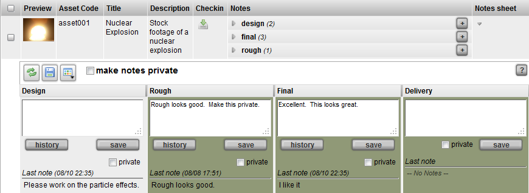
Implementation
The Note Sheet Widget is a common column that can be added using the Column Manager.
Options
dynamic_class | Set the class name of the widget to be displayed |
pipeline_code | Specifies a particular pipeline_code to use or if the parent of this note sheet widget does not have the pipeline_code attribute e.g. model. If unspecified, it will be based on the pipeline_code value of its parent. |
element_class | To override the default element class NoteTableElementWdg, modify the look or add extra buttons to the UI to enter notes. One method is just to override the method get_action_wdg() |
use_parent | When a note sheet is added to a sType like task or snapshot but it is set up so that the note is targeted at its parent, which could be an asset or shot. If so, set this display option to true. |
append_context | Used to add contexts that are not defined in the pipeline. Separate the contexts with a pipe character if there are more than one, e.g. producer |
Advanced
<element name="notes_sheet" edit="false">
<display class="HiddenRowToggleWdg">
<dynamic_class>tactic.ui.app.NoteSheetWdg</dynamic_class>
</display>
</element>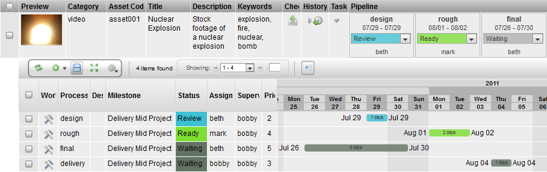
Description
The Task Edit Widget is a toggle that opens a hidden row that displays all the tasks for an item. If there are multiple processes for an item, the tasks for those processes will be displayed.
Info
Name | Task Edit |
Common Title | Tasks |
Class | tactic.ui.panel.TableLayoutWdg |
Category | Table Layout Widget |
Supported Interfaces | TableLayoutWdg |
TACTIC Version Support | 3.0.0 |
Required database columns | none |
Usage
The following details are displayed by the Task Edit Widget for a task:
- a link to the task’s Work Area (where the Checkin and Checkout tools can be found)
- the task’s description
- status for that process
- the user assigned to the process
- the supervisor of that process
- the priority
- start and end date for the process in the form of a Gantt chart
Implementation
The Task Edit Widget is a common column that can be added using the Column Manager.
Options
There are no options provided for the Task Edit Widget.
Advanced
<element name="task_edit" title="Tasks" edit="false">
<display class="HiddenRowToggleWdg">
<dynamic_class>tactic.ui.panel.TableLayoutWdg</dynamic_class>
</display>
</element>
Description
The Task Schedule displays a horizontal bar graph representing the schedule of start/end date and duration for all tasks assigned to an item. This widget is a simple pre-configuration of the Gantt Chart widget.
Info
Name | Task Schedule |
Class | tactic.ui.table.GanttElementWdg |
Category | Common Columns |
TACTIC Version Support | 3.0+ |
Required database columns | none |
Implementation
The Task Schedule Widget is a common column that can be added using the Column Manager.
Options
The following is the configuration option which the makes this widget distinct from its derivative, the Gantt Chart widget.
[
{
"start_date_expr": "@MIN(sthpw/task.bid_start_date)",
"end_date_expr": "@MAX(sthpw/task.bid_end_date)",
"color": "#33F",
"edit": "true",
"default": "false"
},
{
"start_date_expr": "@MIN(sthpw/task['context','model'].bid_start_date)",
"end_date_expr": "@MAX(sthpw/task['context','model'].bid_end_date)",
"color": "#F0C956",
"edit": "true",
"default": "false"
}
]Show Title | True or False Display the title in the column header. |
Date Mode | visible, hover Always display the start/end date next to the horizontal bar or display the dates only on cursor hover. |
Range Start Date | Select the start date range for the tasks to display. |
Range End Date | Select the end date range for the tasks to display. |
Show Milestones | task, project Display a red vertical bar representing the milestone for the task or the project |
Year Display | none, default Display the year in the column header. |
Week Display | none, default Display the week in the column header. |
Advanced
<element name="task_schedule">
<display class="tactic.ui.table.GanttElementWdg">
<options>[
{
"start_date_expr": "@MIN(sthpw/task.bid_start_date)",
"end_date_expr": "@MAX(sthpw/task.bid_end_date)",
"color": "#33F",
"edit": "true",
"default": "false"
},
{
"start_date_expr": "@MIN(sthpw/task['context','model'].bid_start_date)",
"end_date_expr": "@MAX(sthpw/task['context','model'].bid_end_date)",
"color": "#F0C956",
"edit": "true",
"default": "false"
}
]</options>
</display>
<action class="tactic.ui.table.GanttCbk">
<sObjects>@SOBJECT(sthpw/task)</sObjects>
<options>[
{
"prefix": "bid",
"sObjects": "@SOBJECT(sthpw/task)",
"mode": "cascade"
},
{
"prefix": "bid",
"sObjects": "@SOBJECT(sthpw/task['context','model'])",
"mode": "cascade"
}
]</options>
</action>
</element>
Description
The Task Status History is a toggle that opens a hidden row that displays all the status changes for an item. If there are multiple processes for an item, the status updates for those processes will be displayed.
Info
Name | Task Status History |
Class | tactic.ui.panel.TableLayoutWdg |
Category | Common Columns |
TACTIC Version Support | 3.0+ |
Required database columns | none |
Implementation
The Task Edit Widget is a common column that can be added using the Column Manager.
Options
There are no options provided for the Task Edit Widget.
Advanced
<element name="task_status_history">
<display class="HiddenRowToggleWdg">
<dynamic_class>tactic.ui.panel.TableLayoutWdg</dynamic_class>
<search_type>sthpw/status_log</search_type>
<view>table</view>
<expression>@SOBJECT(sthpw/task.sthpw/status_log)</expression>
<mode>simple</mode>
</display>
</element>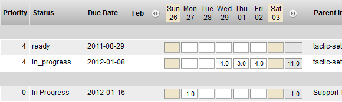
Description
The Work Hours widget provides an interface to record the number of work hours spent for each task. The break down of the work hours by task allows the analysis to be broken down at the lowest level of detail.
Info
Name | Work Hours List |
Class | tactic.ui.table.WorkHoursElementWdg |
TACTIC Version Support | 2.5.0 |
Required database columns | none |
Implementation
The Work Hours List Element is a common column that can be added to any task view using the Column Manager.
Options
There are no options available for this widget.
view | The view to retrieve from the Widget Config. This is not required if the HTML option is supplied. |
html | This option is where the HTML code is embedded. |
search_type | The Search Type the CustomLayoutWdg applies to (if applicable) |
Examples
We can record 4 hours of work on Wednesday and 3 hours on Thursday for a task. The total for that week will also be displayed as a convenience.
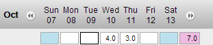
Gantt Description
The Gantt widget has the capability of displaying all projects schedules along with sequences and tasks schedules. With the widget you can switch between weeks to months view. This widget can be utilized and edited in multiple different ways. It also displays the start and end date along with the amount of days.
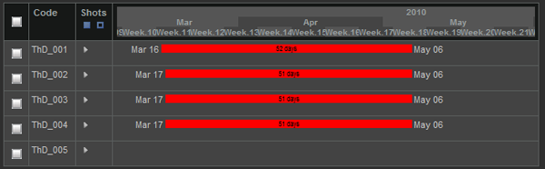
Info
Name | Calendar Gantt Widget |
Class | GanttWdg |
Category | Common Columns |
Supported Interfaces | TACTIC Version Support |
2.6.0+ | Required database columns |
Usage
There are many ways to edit the Gantt Widget. You can also edit what part of the month, week or year of the schedule to view. Clicking on the header date of the Gantt Widget will toggle the different viewing options.
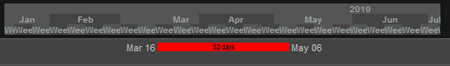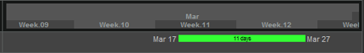
Above shows two different displays of viewing the range of the date. Clicking on the weeks will toggle to another viewing range.
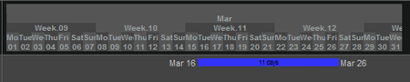
The bars that show the schedule can also be edited using the UI. Hovering the mouse over the bars will popup a a window that will display the dates of the schedule.
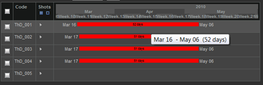
The bars can also be editied by selecting the start and end dates and sliding the either end from the right to left. The first image below shows the end of the date stretched to May 14 and the second image shows the start date streched back to March 13.
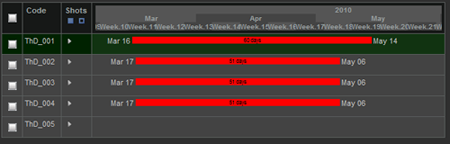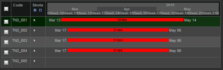
The schedule bar can also move sideways while keeping the number of days constant by selecting the bar and shifting it from left to right.
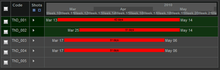
The Gantt Widget can also be edited using multi selection. Whether it is changing the end date, start date or sliding the bars forward and backward, the Gantt Widget can hande it. Below are images of a few examples of having the sequences muli-selected and edited.
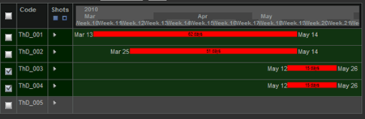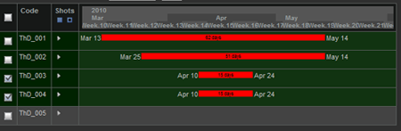
The Gantt Widget also has the capability of sliding the full time line by selecting the empty area of the widget and dragging the mouse left or right.
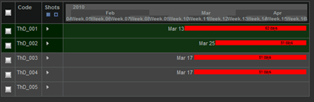
The Gantt Widget can be found under the column manager as task schedule.
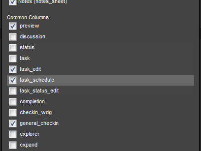
Advanced
The following example illustrates a Gantt Widget that shows all tasks for a project, the schedule for all asset tasks, and the schedule for all shot tasks.
<element name='task_schedule'>
<display class='tactic.ui.table.GanttElementWdg'>
<options>[
{
"start_date_expr": "@MIN(sthpw/task.bid_start_date)",
"end_date_expr": "@MAX(sthpw/task.bid_end_date)",
"color": "white",
"edit": "true",
"default": "true"
},
{
"start_date_expr": "@MIN(sthpw/task['search_type', '~', 'asset'].bid_start_date)",
"end_date_expr": "@MAX(sthpw/task['search_type', '~', 'asset'].bid_end_date)",
"color": "red",
"edit": "true",
"default": "false"
},
{
"start_date_expr": "@MIN(sthpw/task['search_type', '~', 'shot'].bid_start_date)",
"end_date_expr": "@MAX(sthpw/task['search_type', '~', 'shot'].bid_end_date)",
"color": "blue",
"edit": "true",
"default": "false"
}
]</options>
</display>
<action class='tactic.ui.table.GanttCbk'>
<sobjects>@SOBJECT(prod/shot.sthpw/task)</sobjects>
<options>[
{
"prefix": "bid",
"sobjects": "@SOBJECT(sthpw/task)",
"mode": "cascade"
},
{
"prefix": "bid",
"sobjects": "@SOBJECT(sthpw/task['search_type', '~', 'asset'])",
"mode": "cascade"
},
{
"prefix": "bid",
"sobjects": "@SOBJECT(sthpw/task['search_type', '~', 'shot'])",
"mode": "cascade"
}
]</options>
</action>
</element>Note: There are 3 editable bars in the display options in the above example and therefore, there are 3 corresponding action options. The prefix action option assumes that the column in the table is named like <prefix>_start_date and <prefix>_end_date. If your column names are different, you would want to use the action_option "start_date_col" and "end_date_col" with the full column name as the value.
Description
The Work Element Widget is used for accessing the checkin and checkout tool needed to handle a task assigned. After a task is assigned, an artist can go to the "My Tasks" or any other task page where there is a "Work" column which will expand to this widget. You can carry out serveral typical functions related to check-in and check-out in the sub tabs that open. You can even customize what tabs are opened when the work button is clicked on.
Name | Work |
Class | tactic.ui.table.WorkElementWdg |
Category | Table Element Widget |
Supported Interfaces | TableLayoutWdg |
TACTIC Version Support | 3.5.0 |
Required database columns | none |
Usage
When clicked on, it opens up a new Work area tab with 3 sub tabs underneath which comprise all the functions an artitst would need when assigned a task. He can enter notes, change task status, review check-in history, check in, and check out files.
The General Check-in Widget appears in the Check-in sub tab. You can click "Browse" here to select the file to be checked in. The is_current checkbox in Options can be used to make a snapshot current on checking in. The link checkbox, when checked, links the sandbox directory to the process tied to the task. It makes it easy for an artist to jump to a different process and checks out their snapshots into the current sandbox associated with the task. Otherwise, if you check out a file from the model process, it will be copied to the model sandbox folder.
Options
checkout_panel_script_path | Deprecated in 3.5. Use the tab_config_<> method to set up custom checkout tab |
checkout_script_path | A custom check-out script path you can specify to override the default check-out script. The default check-out script checks out everything under the selected snapshot. Refer to Example 4. |
validate_script_path | A script path pointing to a JS script that is run before the actual check-in. If it throws an error using "throw(<error message>)", the check-in will not initiate. You can also use it to run some client-side preprocessing of the file or directory. |
transfer_mode | Upload, copy, move, preallocate are supported. preallocate can only be used if the client machine has direct disk write access to the TACTIC asset repo. It skips the need to hand off the files in the handoff directory. copy is recommended for most situation when users are usually granted only read access to the TACTIC asset repo. |
mode | Sequence, file, dir, and add are supported. sequence is for file sequence checkin; file is for single file checkin, dir is for directory checkin and add if for appending file or dir to an existing snapshot. If not specified, multiple selections will be available for the user to choose. Note: upload transfer mode only supports single file or file sequence check-in. |
checkin_panel_script_path | Deprecated in 3.5. Use the tab_config_<> method to set up custom checkin tab |
checkin_script_path | A custom checkin script path you can specify to override the default check-in script. This can be used in conjunction with the validate_script_path. |
process | If set, the process specified will be pre-selected when the General Checkin Widget is drawn, |
lock_process | If set to true, the user will not be able to choose a different process during check-in on the General Checkin-in Widget |
checkin_relative_dir | If specified, e.g. WIP, it is appended to the current sandbox directory and preselcted as the directory to be checked in. It’s applicable to Direcotry-type checkin |
checkin_ui_options | It applies to the check-in options of the CheckinWdg. Supported attribute at the moment is "is_current" e.g. {"is_current":"false"} would make all check-ins non-current. {"is_current":"optional"} would make the checkbox unchecked by default. Not specifiying it would render the option available to the user to choose at the check-in time. |
show_versionless_folder | If set to true, it displays the latest and current versionless folders. |
Implementation
The following defines the default "Work" element. It looks a bit complicated but in most cases, you would just need to simply change the different options available through "Edit Column Definition":
<element name="work" title="Work on Task">
<display class="tactic.ui.table.WorkElementWdg">
<transfer_mode>upload</transfer_mode>
<cbjs_action>
var tbody = bvr.src_el.getParent(".spt_table_tbody");
var element_name = tbody.getAttribute("spt_element_name");
var search_key = tbody.getAttribute("spt_search_key");
var checkin_script_path = bvr.checkin_script_path;
var checkin_ui_options = bvr.checkin_ui_options;
var validate_script_path = bvr.validate_script_path;
var checkout_script_path = bvr.checkout_script_path;
var checkin_mode = bvr.mode;
var transfer_mode = bvr.transfer_mode;
var sandbox_dir = bvr.sandbox_dir;
var lock_process = bvr.lock_process;
var server = TacticServerStub.get();
var code = server.eval( "@GET(parent.code)", {search_keys: search_key} );
spt.tab.set_main_body_tab();
spt.tab.add_new();
var kwargs = {
'search_key': search_key,
'checkin_script_path': checkin_script_path ,
'checkin_ui_options': checkin_ui_options ,
'validate_script_path': validate_script_path ,
'checkout_script_path': checkout_script_path,
'mode': checkin_mode ,
'transfer_mode': transfer_mode,
'sandbox_dir': sandbox_dir,
'lock_process': lock_process
}
var title = "Task: " + code;
var class_name = "tactic.ui.tools.sobject_wdg.TaskDetailWdg";
spt.tab.load_selected(search_key, title, class_name, kwargs);
</cbjs_action>
<icon>WORK</icon>
</display>
</element>The following defines a different usage of it using copy trasnfer mode, a custom checkout script and a custom validating checkin script. The value of the two script paths are the script_path you have saved in the Script Editor. lock_process is set to false. To enable these options, you can do it in the context menu "Edit Column Definition" and set the following:
checkout_script_path: checkout/all_processes validate_script_path: checkin/validate_frames transfer_mode: copy lock_process: false
The following shows a way to customize what the small check-out button does in the checkout_tool view. In widget config, we will set the column definition for the element checkout for the "sthpw/snapshot" search type. It can be accessed through "Edit Column Definition".
checkout_script_path: checkout/checkout_tool_script
Script Samples
Example 1: checkin/validate_frames
var values = bvr.values;
var file_path = values.file_paths[0];
var sk = values.search_key;
var applet = spt.Applet.get();
var file_list = applet.list_dir(file_path);
var server = TacticServerStub.get();
var st = 'prod/shot';
var shot = server.get_by_search_key(sk);
var frame_count = parseInt(shot.frame_count, 10);
for (var i=0; i <file_list.length; i++){
var base =spt.path.get_basename(file_list[i]);
if ( base == 'FRAMES') {
var frames = applet.list_dir(file_list[i]);
if (frames.length != frame_count) {
throw('Frames length in FRAMES [' + frames.length
+ '] folder does not match shot\'s frame count');
}
}
}Example 2: checkout/all_processes. It illustrates how to implement a custom check-out that only checks out a portion of what has been checked in.
//back up the Work-in-progress folder
function backup_WIP(bvr) {
var sandbox_dir = bvr.sandbox_dir;
var applet = spt.Applet.get();
var found_WIP = false;
var dirs = applet.list_dir(sandbox_dir, 0);
for (var k=0; k < dirs.length; k++){
if (/WIP$/.test(dirs[k])){
found_WIP = true;
break;
}
}
if (!found_WIP) {
alert('WIP folder not found. Backing up of WIP folder aborted')
}
else {
var server = TacticServerStub.get();
var folder = spt.path.get_basename(sandbox_dir);
var date_obj = new Date();
var suffix = date_obj.getFullYear().toString()
+ spt.zero_pad((date_obj.getMonth() + 1).toString(), 2)
+ spt.zero_pad(date_obj.getDate().toString(), 2) + '_' +
spt.zero_pad(date_obj.getHours().toString(), 2)
+ spt.zero_pad(date_obj.getMinutes().toString(),2);
var parts = sandbox_dir.split(/[\/\\]/);
sandbox_dir = sandbox_dir + '/WIP';
var backup_dir = parts.join('/') + '/WIP' + '_' + suffix;
applet.copytree(sandbox_dir, backup_dir);
//remove the contents of WIP
applet.rmtree(sandbox_dir);
applet.makedirs(sandbox_dir);
}
}
// just checkout a subfolder named REF. if it's not found, just check out the
// first subfolder
function checkout_snapshot_table(bvr){
var top = bvr.src_el.getParent(".spt_checkin_top");
var table = top.getElement(".spt_table");
var search_keys = spt.dg_table.get_selected_search_keys(table);
if (search_keys.length == 0) {
alert('Please check the checkbox(es) to check out a version.');
}
else if (search_keys.length > 1) {
alert('Please check only 1 checkbox at a time. Multi-selection is' +
' only supported for Full Check-out Selected in the Gear menu.');
return;
}
spt.app_busy.show("Custom Check-out snapshots", "Copying to Sandbox...");
var server = TacticServerStub.get();
var top = bvr.src_el.getParent('.spt_checkin_top');
var sandbox_input = top.getElement('.spt_sandbox_dir');
if (sandbox_input)
bvr.sandbox_dir = sandbox_input.value;
for (var i =0; i < search_keys.length; i++) {
checkout_snapshot(bvr, search_keys[i]);
}
spt.app_busy.hide();
}
function checkout_snapshot(bvr, snapshot_key, downlevel) {
var server = TacticServerStub.get();
try {
var paths = server.get_all_paths_from_snapshot(snapshot_key);
//var sandbox_dir =
server.get_client_dir(snapshot_key,{mode:'sandbox'});
var sandbox_dir = bvr.sandbox_dir;
var applet = spt.Applet.get();
for (var i = 0; i < paths.length; i++ ) {
var path = paths[i];
var parts = path.split(/[\/\\]/);
var dirs = applet.list_dir(path);
var tar_dir = '';
for (var j=0; j < dirs.length; j++) {
if ((/REF/i).test(dirs[j]))
tar_dir = dirs[j];
}
//just take the first one if REF is not found
if (!tar_dir) {
alert('REF not found. First subfolder is checked out');
tar_dir = dirs[0];
}
var folder = spt.path.get_basename(tar_dir);
var new_path = path + '/' + folder;
var sand_paths = applet.list_dir(sandbox_dir, 0);
for (var j=0; j< sand_paths.length; j++) {
var dst_folder = spt.path.get_basename(sand_paths[j]);
if (dst_folder == 'REF') {
alert('REF folder already exists in ['
+ sandbox_dir + '] Please rename or remove it first.');
return;
}
}
// the applet can decide between copy_file or copytree
applet.copytree(new_path, sandbox_dir + "/" + folder);
}
}
catch(e){
alert(spt.exception.handler(e));
}
}
backup_WIP(bvr);
var down_level = 1;
checkout_snapshot_table(bvr, down_level);Example 3: Custom Checkout button callback passing a specific script for the Check-out Widget popup using display option "checkout_panel_script_path"
var class_name = 'tactic.ui.widget.CheckoutWdg';
var values = bvr.values;
var search_key = values.search_key;
var sandbox_dir = values.sandbox_dir;
var process = values.process;
var options = { 'show_publish': 'false',
'process': process,
'search_key': search_key,
'checkout_script_path': 'checkout/custom_checkout',
'sandbox_dir': sandbox_dir
};
var popup_id ='Check-out Widget';
spt.panel.load_popup(popup_id, class_name, options);Example 4: Custom check-out script for the small check-out button in the checkout_tool view. This can be used to customize a quick-checkout for the latest or current snapshot without opening the Check-out popup widget, using display option "checkout_script_path"
function checkout_snapshot(bvr) {
var values = bvr.values;
var snapshot_key = values.search_key;
var context = values.context;
var server = TacticServerStub.get();
// get the files for this snapshot, always get the latest
// instead of relying on the last snapshot when the UI was drawn
try {
var paths = server.get_all_paths_from_snapshot(snapshot_key);
//var sandbox_dir = server.get_client_dir(snapshot_key,{mode:'sandbox'});
// This one comes from values as the sandbox_dir is determined by
// the snapshot only
var sandbox_dir = values.sandbox_dir;
var applet = spt.Applet.get();
for (var i = 0; i < paths.length; i++ ) {
var path = paths[i];
var parts = path.split(/[\/\\]/);
var dirs = applet.list_dir(path);
var tar_dir = '';
for (var j=0; j < dirs.length; j++) {
if ((/REF/i).test(dirs[j]))
tar_dir = dirs[j];
}
//just take the first one if REF is not found
if (!tar_dir) {
alert('REF not found. First subfolder is checked out');
tar_dir = dirs[0];
}
var folder = spt.path.get_basename(tar_dir)
var new_path = path + '/' + folder;
var sand_paths = applet.list_dir(sandbox_dir, 0);
for (var j=0; j< sand_paths.length; j++) {
var dst_folder = spt.path.get_basename(sand_paths[j]);
if (dst_folder == 'REF') {
alert('REF folder already exists in [' + sandbox_dir + '] Please rename or remove it first to avoid mixing files.');
return;
}
}
// the applet can decide between copy_file or copytree
applet.copytree(new_path, sandbox_dir + "/" + folder);
}
}
catch(e){
alert(spt.exception.handler(e));
}
}
checkout_snapshot(bvr);Example 5: Custom checkin_script using display option "checkin_script_path". The default snapshot_type is file, if the file extension is .mov, the snapshot_type is set to mov.
var file_paths = bvr.values.file_paths;
var description = bvr.values.description;
var search_key = bvr.values.search_key;
var context = bvr.values.context;
var transfer_mode = bvr.values.transfer_mode
var is_current = bvr.values.is_current;
var path = file_paths[0]
spt.app_busy.show("File Checkin", path);
var snapshot_type = 'file';
if (path.test(/\\.mov$/)){
snapshot_type = 'mov';
}
var server = TacticServerStub.get();
snapshot = server.simple_checkin(search_key, context, path,
{description: description, mode: transfer_mode, is_current: is_current,
snapshot_type:'mov'});Description
The Simple Upload Widget is used for uploading files in-line in tables and also in edit windows. It is the simplest form of Tactic checkin as is allows for uploading of a single file and uses only a single hard coded (configured) checkin context.
Info
Name | Simple Upload Widget |
Class | tactic.ui.widget.SimpleUploadWdg |
Category | Edit Widgets |
Supported Interfaces | TableWdg, EditWdg |
TACTIC Version Support | 2.5.0 \+ |
Required database columns | none |
Implementation
This widget is available as part of the "preview" common column. It is also used when right-clicking on an item and choosing "Change preview" or "Checkin File"
Options
Common Name(s)/Title | Preview, Snapshot, Files |
Context | TableWdg, EditWdg |
Show Preview? | 2.5.0 \+ |
Advanced
<element name='preview'>
<display class='tactic.ui.widget.SimpleUploadWdg'>
<context>icon</context>
</display>
</element>Description
The Thumbnail Widget is available for most types by default as the preview tool for images which have been uploaded for preview and thumbnail purposes. An icon for the corresponding file type is displayed for non-image files.
Info
Name | Thumbnail Widget |
Common Title | Preview, Snapshot, Files |
TACTIC Version Support | 2.5.0 |
Required database columns | none |
Implementation
The Thumbnail widget is available in the common columns.
Options
script_path | Specify a script to control what UI it draws or what happens when the user click on the preview icon. Refer to it by this script path. |
detail_class_name | Specify the default behavior to open up a pop-up window but just with a different widget written in Python. |
icon_context | The context that the widget displays |
icon_size | Control the icon size by percentage (up to 100%) e.g. 30% |
min_icon_size | Minimum icon size (in pixels). |
latest_icon | If set to true, the icon displayed corresponds to the latest checkin in the checkin history. It will disregard the icon context designated for this search type. |
filename | If set to true, the file name of the linked file is displayed under the icon. |
original | If set to true, the link will point to the original file with the main file type checked in. Otherwise the scaled down web version of the file will be linked. This is only applicable to image-type files where an icon has been generated during a check-in. |
file_type | Whether to display the file type for download or not. |
detail | If set to false, clicking of the thumbnail will link the underlying picture instead of displaying the single asset view in a pop-up |
protocol | http(default) or file. The protocol under which the thumbnail link will open when being clicked on. When file is set, the default application is usually Windows explorer or at times Internet Explorer. file mode can alleviate the bandwidth usage on the web server when viewing large media files like Quick Time. |
redirect_expr | Works similarly as the redirect but in the form of expression. e.g. @SOBJECT(prod/sequence). If this display option is set for the ThumbWdg for prod/shot, it will display the icon of its sequence instead. |
Description
The View Panel is a composite widget which binds together a Table Layout Widget and a Search Widget. The Search Widget is a searching mechanism that retrieves items and transfers them to a Table Layout Widget to draw. The View Panel Widget is used in most of TACTIC’s predefined views.
Info
Name | View Panel |
Class | ViewPanelWdg |
TACTIC Version Support | 2.5.0 |
Required database columns | none |
Implementation
The View Panel widget makes use of the TableLayoutWdg capabilities. The views available to the View Panel are identical to that of the Table Layout Widget.
Options
search_type | Define The sType that this View panel displays with. |
view | The TACTIC name for the view. e.g. admin.test_asset_tracking |
insert_view | Specify the path to a custom insert view. |
edit_view | Specify the path to a custom edit view. |
ingest_custom_view | Specify a custom layout view that Ingest Files menu option opens in a new tab. |
ingest_data_view | Specify a view similar to edit view that defines any data to be saved with each ingested sobject. |
expression | Use an expression for the search. The expression must return items. e.g. @SEARCH(sthpw/note) or @SOBJECT(sthpw/note) |
filter | JSON data structure representing the settings for SearchWdg |
parent_key | Provide a parent item to filter in the search. |
search_key | Provide the starting search key. |
search_view | (INTERNAL) View for custom searches. |
layout | Different layout available - default, tile, fast_table, raw_table, old_table, static_table, collection, browser, card, tool, aggregate, custom_item, custom |
show_gear | Determine whether to show the gear menu - true, false. |
show_search | Determine whether to show the search box - true, false. |
show_search_limit | Determine whether to show the search limit - true, false. |
show_insert | Determine whether to show the insert button - true, false. |
show_refresh | Display the refresh button on the shelf - true, false. |
show_keyword_search | Determine whether to show the Keyword search input - true, false. |
show_select | Determine whether to show row_selection - true, false. |
show_shelf | Determine whether to show the action shelf - true, false. |
show_layout_switcher | Determine whether to show the layout switcher - true, false. |
show_column_manager | Determine whether to show the column manager - true, false. |
show_collection_tool | Determine whether to show the collection button - true, false. |
show_context_menu | Determine whether to show the context menu - true, false. |
show_expand | Determine whether to show the expand button - true, false. |
show_help | Determine whether to show the help button - true, false. |
show_border | Determine whether to show the table border - true, false. |
popup | Pop the view up in a pop-up window. |
do_initial_search | Run the search on loading of the view. |
init_load_num | Set the number of rows to laod initially. If set to -1, it will not load in chunks |
no_results_msg | The message displayed when the search returns no item |
no_results_mode | The display modes for no results |
custom_filter_view | View for custom filters. Defaults to "custom_filter". |
process | The process which is applicable in the UI when load view is used. |
checkin_context | Override the checkin context for Check-in New File - publish (default). |
checkin_type | Override the checkin type for Check-in New File - auto, strict. |
mode | Mode to pass into the layout engine - widget, raw. |
element_names | Provide a list of column names (ie. "preview,name,description") for the view. |
group_elements | Provide a list of grouping column names. e.g. sort_order,category |
schema_default_view | (INTERNAL) flag to show whether this is generated straight from the schema. |
order_by | The column name to order ascending by. multiple columns are to be comma separated. |
search_limit | The number of items to show on each page. e.g. 20 A value < 0 means no limit affecting the search. |
search_limit_mode | Determine if it displays top, bottom or both search limit - bottom, top, both |
simple_search_mode | Display mode of simple search bar - inline, hidden. |
simple_search_view | View for defining a simple search. |
simple_search_config | Xml config as opposed to a view for defining a simple search. |
simple_search_columns | Number of columns in the simple search bar - 2, 3 or 4. |
simple_search_visible_rows | Number of visible rows in the simple search bar. |
width | Set the default width of the table |
gallery_align | Gallery vertical alignment. It is used when a Preview icon is clicked to open in gallery mode - top, bottom. |
Advanced
Often, the ViewPanelWdg is defined from a side bar link. It can be defined by XML as follows
<element name='summary'>
<display class='tactic.ui.panel.ViewPanelWdg'>
<search_type>sthpw/task</search_type>
<view>task_summary</view>
</display>
</element>Custom Layout

Description
The Custom Layout Widget is a simple tool which opens up an incredible amount of customizable interface flexibility and integration from within the TACTIC UI. This widget provides a container in the web page which supports embedding of HTML code including TACTIC Widgets, Expressions and Behaviours. This allows development of complex widgets similar to the standard widgets delivered with TACTIC.
With this, the following examples can be achieved:
- Custom reports can be made which include dynamic TACTIC Expressions presented in a customized web page design.
- Views can be assembled using a combination of TACTIC widgets along with regular HTML elements.
- Embeddable web code such as Google maps, timezone clocks, web mail clients etc. can be embedded in the TACTIC interface.
Info
Name | CustomLayoutWdg |
Class | tactic.ui.panel.CustomLayoutWdg |
TACTIC Version Support | 2.5.0 |
Required database columns | none |
Implementation
The Custom Layout Widget in its simplest form is a delivery mechanism for HTML code. The following "Hello World" example below demonstrates this.

<element name="hello_world">
<display class="tactic.ui.panel.CustomLayoutWdg">
<html>
<h2>Hello World</h2>
</html>
</display>
</element>Where a large part of the considerations for usage of a Custom Layout is where it will be embedded and how it will get retrieved. There are a few ways to implement this widget:
- In a cell (element) in a TableLayoutWdg (Example 1a).
- In the widget config, then called from a link in the sidebar (Example 1b).
- In the widget config, than called from a Custom Script (Javascript) (Example 1c).
Once a delivery method has been decided, it also needs to be decided if the custom Layout will need to evaluate based on an item being passed in as the parent or starting point (technically speaking a relative expression). For example, to use a CustomLayout to display a report for a item, the dynamic data in the CustomLayout needs to be derived starting from the specified item.
Taking advantage of relative expressions is usually accessed/assumed through the search_key value for the widget. This is most often done through TACTIC Expressions embedded in the HTML code or, through JavaScript code interacting with the CustomLayout. Either way, the search_key value must me passed into the widget for relative behavior. A simple example is that a button in a table can pass in the search key based on the item (row) it was clicked for. This would allow for loading of a custom dashboard which shows all information pertaining to that item.
Embedded Expressions
Expressions can be embedded in the Custom Layout through usage of a [expr] style tag. This Tag allows for embedding of expressions that are evaluated before the HTML which provide the resulting values into the HTML code.
The following example displays the task status of the modelling process.
<element name="hello_world">
<display class="tactic.ui.panel.CustomLayoutWdg">
<html>
<div>
Model Status: [expr]@GET(sthpw/task['process', 'model'].status)[/expr]
</div>
</html>
</display>
</element>Embedded Widgets
The CustomLayoutWdg provides full support for embedding of TACTIC Widgets. For example TableLayoutWdg and EditWdg can placed in a CustomLayout. This for allows, for example, the ability to create a dashboard which can show multiple Tables, CustomLayouts HTML, etc.
<element name="hello_widget">
<display class="tactic.ui.table.CustomLayoutwdg">
<html>
<element name="tasks">
<display class="TableLayoutWdg">
<search_type>sthpw/task</search_type>
<view>task_list</view>
<mode>simple</mode>
<do_search>true</do_search>
</display>
</element>
</html>
</display>
</element>Note
In the example above, the <search_key> option is automatically being passed the search_key from the state of the overall Custom Layout. What this will do is pass in the searhc key to the table which will automatically filter it to only show items related to the search_key (parent). For example in a dashboard for a shot, the tasks table will only display tasks related to the shot as opposed to all tasks in the system.
Embedded Behaviours
The Custom Layout also supports usage of the TACTIC JavaScript Behaviour system. With this, elements in the Custom Layout can contain embedded behaviours which allow for creation of custom interfaces and utilities. This opens up full a connection with the interface, clientAPI and Java Applet.
<?xml version='1.0' encoding='UTF-8'?>
<config>
<hello_world>
<html>
<span>This is a button:</span>
<input type='button' class='spt_button1' value='Press Me'/>
</html>
<behavior class='spt_button1'>{
"type": "click_up",
"cbjs_action": '''
alert('Hello World');
'''
}</behavior>
</hello_world>
</config>Options
view | The view to retrieve from the Widget Config. This is not required if the HTML option is supplied. |
html | This option is where the HTML code is embedded. |
search_type | The Search Type the CustomLayoutWdg applies to (if applicable) |
Examples
Example 1a
This can be stored in the definition view and called as an element by name (<element name="hello_world"/>) or, directly in the view config.

If added to the definition, it will be available as a Widget Column in the Column Manager.

<config>
<definition>
<element name="preview"/>
<element name="code"/>
<element name="hello_world">
<display class="tactic.ui.panel.CustomLayoutWdg">
<html>
<h2>Hello World</h2>
</html>
</display>
</element>
</definition>
</config>Example 1b
The following example shows how to create a sidebar link which loads a Custom Layout view defined in the Widget Config.
In the Widget Config enter the following hello_world view. This can be called from The Javascript code and sent to a popup.
 2. The link can be configured in the Project Views Manager. Under the
action menu, select "New Link". In the pop-up, Fill the options as shown
in the following image.
2. The link can be configured in the Project Views Manager. Under the
action menu, select "New Link". In the pop-up, Fill the options as shown
in the following image. 3. Once the link is saved, select it in the Preview of Side Bar to load
its options into the Element Detail panel on the right. Once loaded
switch the mode to Advanced and double check that the XML config
contains the following:
3. Once the link is saved, select it in the Preview of Side Bar to load
its options into the Element Detail panel on the right. Once loaded
switch the mode to Advanced and double check that the XML config
contains the following:<element name="hello_world" title="Hello World" icon="APPROVED" state="" is_visible="on"> <display class="LinkWdg"> <class_name>tactic.ui.panel.CustomLayoutWdg</class_name> <view>example01</view> </display> </element>
Example 1c
The following example shows how to create a CustomLayoutWdg View in the widget config then, call it from the Javascript Editor
In the Widget Config enter the following hello_world view. This can be called from The Javascript code and sent to a pop-up.
 2. In the Javascript Editor create the following custom script example
to load the view into a pop-up.
2. In the Javascript Editor create the following custom script example
to load the view into a pop-up.kwargs = { view: 'hello_world', }; spt.panel.load_popup('Custom Layout Popup', \ 'tactic.ui.panel.CustomLayoutWdg', kwargs);

Description
The TableLayoutWdg is the primary widget used to layout tabular data. It is primarily driven by the widget configuration. The TableLayoutWdg has the ability to display complex widgets inside each cell, to inline edit the data and to color code cells. It is the widget that is most often used to display information within the TACTIC.
Info
Name | Table Layout |
Class | tactic.ui.panel.TableLayoutWdg |
TACTIC Version Support | 2.5.0 \+ |
Required database columns | none |
Implementation
The TableLayoutWdg makes use of "views" which are defined in the widget config for each project. When the Table is loaded as part of an interface, a view configuration is passed into it which defines which columns and widgets should be displayed in the view. Typically, these view configurations are automatically saved in the background when a user saves a view from within the TACTIC interface. The table itself provides the ability to add, remove, rearrange, resize and group columns which can then be saved out often as links in the sidebar.
The following shows a simplified version for an "asset tracking" view as saved in the background widget config.
<config>
<asset_tracking layout="TableLayoutWdg" >
<element name="preview" width="74px"/>
<element name="asset_category_code" width="64px"/>
<element name="code" width="61px"/>
<element name="title" width="121.883px"/>
<element name="description" width="276.75px"/>
<element name="keywords" width="253.367px"/>
<element name="general_checkin" width="27px"/>
<element name="history" width="42px"/>
<element name="task_edit" width="29px"/>
<element name="task_status_edit" width="223.167px"/>
</asset_tracking>
</config>The widget configuration is an XML document. In this example, it defines an "asset_tracking" view with elements (preview, asset_category, code, title, description, keywords, etc…).
To draw what to display, TableLayoutWdg looks at the list of elements defined in the widget config and draws a column for each element. TACTIC then draws a row for each item that was either retrieved from a search, an expression or by supplied items. Each cell in the table represents an item being drawn by the defined element for a given column.
While the top widget configuration defines the list of elements to draw the columns, the exact definition of each element do not necessarily appear here. There are a number of views which define an element. Some of these elements may be defined inline or they may be defined elsewhere. There is a set hierarchy which the TableLayoutWdg looks for to find the definition of a particular element.
The hierarchy which TableLayoutWdg looks to find the definition for an element is as follows:
- the given type, view combination in the widget_config table
- the "definition" view for the given type in the widget_config table
- the predefined views for a given type (modules shipped with TACTIC will have predefined views for may of the items to ensure proper functioning of TACTIC even if there are no entries in the widget_config database)
- the "default_definition" for a given sType as defined in the predefined views.
The third and fourth locations only apply to predefined sTypes that are shipped with TACTIC. All custom types will only use the first two.
Options
search_type | Define the sType that this table will be displaying. It is used both for finding the appropriate widget config and for handling search (if necessary). Defaults to "table". |
view | Defines the view that this table will displaying. It used to find the appropriate widget config to display the table. |
insert_view | Specify the path to a custom insert view. |
edit_view | Specify the path to a custom edit view. |
ingest_custom_view | Specify a custom layout view that Ingest Files menu option opens in a new tab. |
ingest_data_view | Specify a view similar to edit view that defines any data to be saved with each ingested sobject. |
expression | Specify an expression to drive the search. The expression must return items. e.g. @SEARCH(sthpw/note) or @SOBJECT(sthpw/note) |
config_xml | Explicitly define the widget config. the kwarg view is preferred over this. |
do_search | By default, the TableLayoutWdg will handle the search itself. However, certain widgets may wish to turn this functionality off because they are supplying the search (internally used by ViewPanelWdg) - true, false. |
order_by | Add an explicit order by in the search |
parent_key | Set a specific parent for the search |
checkin_context | Override the checkin context for Check-in New File - publish (default). |
checkin_type | Override the checkin type for Check-in New File - auto, strict. |
width | Define an initial overall width for the table |
show_gear | Determine whether to show the gear menu - true, false. |
show_search | Determine whether to show the search box - true, false. |
show_search_limit | Determine whether to show the search limit - true, false. |
show_insert | Determine whether to show the insert button - true, false. |
show_refresh | Display the refresh button on the shelf - true, false. |
show_keyword_search | Determine whether to show the Keyword search input - true, false. |
show_select | Determine whether to show row_selection - true, false. |
show_shelf | Determine whether to show the action shelf - true, false. |
show_layout_switcher | Determine whether to show the layout switcher - true, false. |
show_column_manager | Determine whether to show the column manager - true, false. |
show_collection_tool | Determine whether to show the collection button - true, false. |
show_context_menu | Determine whether to show the context menu - true, false. |
show_expand | Determine whether to show the expand button - true, false. |
show_help | Determine whether to show the help button - true, false. |
show_border | Determine whether to show the table border - true, false. |
show_header | Determine whether to show the table header - true, false. |
show_insert | Determine whether to show the insert button - true, false. |
search_limit | The number of items to show on each page. e.g. 20 A value < 0 means no limit affecting the search. |
search_limit_mode | Determine if it displays top, bottom or both search limit - bottom, top, both |
mode | Determine whether to draw with widgets or just use the raw data - widget, raw. |
element_names | Explicitly set the element names to be drawn |
Advanced
Very often, the TableLayoutWdg is not used directly, but is used through the ViewPanelWdg, which combines the TableLayoutWdg with the SearchWdg. Using ViewPanelWdg will provide all the functionality in a table view
Using the TableLayoutWdg does provide a simpler view if the search is already known,
This simple example shows the login table and the objects are explicitly given.
from tactic.ui.panel import TableLayoutWdg
div = DivWdg()
table = TableLayoutWdg(search_type='sthpw/login', view='table')
sObjects = Search("sthpw/login").get_sObject()
table.set_sObjects(sObjects)
div.add(table)An expression can be set for the search as well.
from tactic.ui.panel import TableLayoutWdg div = DivWdg() expression = "@SOBJECT(sthpw/login)" table = TableLayoutWdg(search_type='sthpw/login', view='table',expression=expression) div.add(table)
This example embeds the login table with a "table" view in a CustomLayoutWdg.
<config>
<login>
<html>
<h1>This is the login table</h1>
<element name='login_table'/>
</html>
<element name='login_table'>
<display class='tactic.ui.panel.TableLayoutWdg'>
<search_type>sthpw/login</search_type>
<view>table</view>
<expression>@SOBJECT(sthpw/login)</expression>
</display>
</element>
</login>
</config>The widget config views determine how the TableLayoutWdg draws itself. There are a few custom attributes that a view can define. The view can define many parts of how the TableLayoutWdg is displayed. The following hides the "insert" button and makes each of the cells non-editable. These attributes are useful for reports which are generally not editable.
<?xml version="1.0" encoding="UTF-8"?>
<config>
<simple insert='false' edit='false'>
<element name="preview"/>
<element name="code"/>
<element name="name"/>
<element name="description"/>
</simple>
</config>
Description
This widget provides a drop down selection menu of values for a column for the Simple Search to do filtering on.
Info
Name | Select Filter Element Widget |
Class | tactic.ui.filter.SelectFilterElementWdg |
TACTIC Version Support | 3.7+ |
Required database columns | none |
Options
title | The title for the Select Filter Element. For example: <element name=artist_name title=Artist Name> |
values (required) | The values to populate the drop down selection with. For example, it can be a TACTIC expression: <values_expr>@GET(sthpw/login.login)</values_expr> or, it can be a pipe separated list of values. For example: <values>new|open|in_dev|need_info|on_hold|need_validation|closed|invalid</values> |
column (required) | The table column to do the select from. For example: <column>asset_category_code</column> |
Implementation
Find or define the filter view in the Widget Config and use the following XML code as an example of what to add to the config:
<config>
<custom_filter>
<element name='dynamic'>
<display class='tactic.ui.filter.SelectFilterElementWdg'>
<values_expr>@GET(project/asset_category.code))</values_expr>
<column>asset_category_code</column>
</display>
</element>
</custom_filter>
</config>For the above example, this filter will provide a list of asset category codes to select from.

Notice that an icon of a green light appears next to the filter if it is being used:

Example 1
The following example demonstrates the Select Filter Element Widget providing filtering options for scrum tickets.
Below is what the Select Filter Elements look like in the user interface:

Below is what the config for the above example looks like in the Widget Config:
<config>
<custom_filter>
<element name='assigned'>
<display class='tactic.ui.filter.SelectFilterElementWdg'>
<values_expr>@GET(sthpw/login.login)</values_expr>
<column>assigned</column>
</display>
</element>
<element name='status'>
<display class='tactic.ui.filter.SelectFilterElementWdg'>
<values>new|open|in_dev|need_info|on_hold|need_validation|closed|invalid</values>
<column>status</column>
</display>
</element>
<element name='type'>
<display class='tactic.ui.filter.SelectFilterElementWdg'>
<values_expr>@UNIQUE(@GET(scrum/ticket.type))</values_expr>
<column>type</column>
</display>
</element>
<element name='sprint'>
<display class='tactic.ui.filter.SelectFilterElementWdg'>
<values_expr>@GET(scrum/sprint.title)</values_expr>
<column>scrum/sprint.title</column>
</display>
</element>
<element name='feature'>
<display class='tactic.ui.filter.SelectFilterElementWdg'>
<values_expr>@GET(scrum/feature.title)</values_expr>
<column>scrum/feature.title</column>
</display>
</element>
<element name='product'>
<display class='tactic.ui.filter.SelectFilterElementWdg'>
<values_expr>@GET(scrum/product.title)</values_expr>
<column>scrum/feature.scrum/product.title</column>
</display>
</element>
<element name='customer'>
<display class='tactic.ui.filter.SelectFilterElementWdg'>
<values_expr>@UNIQUE(@GET(scrum/ticket.customer_code))</values_expr>
<column>customer_code</column>
</display>
</element>
</custom_filter>
</config>Example 2
The following example is from the VFX project. It demonstrates how the Select Filter Element Widget can provide filtering options on assets based on columns not belonging to the current table itself.
Below is the schema for the VFX project. From the asset search type, a Select Filter Element is built based for attributes in the asset_category, sequence, shot and search types.

Below is what the Select Filter Elements look like in the user interface:

Below is what the config for the above example looks like in the Widget Config:
<config>
<custom_filter>
<element name='keywords'/>
<element name='asset_category'>
<display class='tactic.ui.filter.SelectFilterElementWdg'>
<values_expr>@GET(vfx/asset_category.code))</values_expr>
<column>asset_category</column>
</display>
</element>
<element name='sequence'>
<display class='tactic.ui.filter.SelectFilterElementWdg'>
<values_expr>@GET(vfx/sequence.code))</values_expr>
<column>vfx/asset_in_sequence.sequence_code</column>
</display>
</element>
<element name='shot'>
<display class='tactic.ui.filter.SelectFilterElementWdg'>
<values_expr>@GET(vfx/shot.code))</values_expr>
<column>vfx/asset_in_shot.shot_code</column>
</display>
</element>
</custom_filter>
</config>Note: the column attribute can only point to sTypes of the local database. For example if you are in vfx project’s sequence page, you can’t filter for task status of a shot with <column>vfx/shot.sthpw/task.status</column>. An alternative is to use the Advanced Search Criteria’s children section or the cross_db attribute of the KeywordFilterElementWdg.
<!-- in a task view, search for the shot's title attribute-->
<element name="keywords">
<display class="tactic.ui.filter.KeywordFilterElementWdg">
<mode>keyword</mode>
<column>vfx/shot.title</column>
<cross_db>true</cross_db>
</display>
</element>Description
The Checkbox Filter Element Widget appears as a check box which activates filteringm when checked. This widget provides a convenient way to perform more complex search operations.
Info
Name | Checkbox Filter Element Widget |
Class | tactic.ui.filter.CheckboxFilterElementWdg |
TACTIC Version Support | 3.7+ |
Required database columns | none |
Options
Titles for Checkbox Filter Element. For example:
titles | <display class=tactic.ui.filter.CheckboxFilterElementWdg> <titles>Active|Pending|Closed</titles> </display> |
options | <options>my_tickets|beth_tickets|ted_tickets</options> <my_tickets>@SOBJECT(scrum/ticket[assigned,$LOGIN])</my_tickets> <beth_tickets>@SOBJECT(scrum/ticket[assigned,beth])</beth_tickets> <ted_tickets>@SOBJECT(scrum/ticket[assigned,ted])</ted_tickets> |
Implementation
Specify (or look up) the name of the Simple Search View under Admin Views → Project → Manage Side Bar → Simple Search View.
In the example below, the Simple Search View is named: simple_search_view
Look up and edit that simple search view in the Widget Config. Use the following XML code as an example of what to add to the config:
<config>
<simple_search_view>
<element name='dynamic'>
<display class='tactic.ui.filter.CheckboxFilterElementWdg'>
<options>asset_category_3d</options>
<asset_category_3d>@SOBJECT(project/asset['asset_category_code','3d'])</asset_category_3d>
</display>
</element>
</simple_search_view>
</config>For the above example, this filter returns results where the asset_category_code is: 3d

Examples
Below is an example of adding 3 check box filters: a filter to search for tickets that belong to the currently logged in user, the user beth and the user ted. Notice that the options are pipe | separated.
<config>
<simple_search_view>
<element name='mine'>
<display class='tactic.ui.filter.CheckboxFilterElementWdg'>
<options>my_tickets|beth_tickets|ted_tickets</options>
<my_tickets>@SOBJECT(scrum/ticket['assigned',$LOGIN])</my_tickets>
<beth_tickets>@SOBJECT(scrum/ticket['assigned','beth'])</beth_tickets>
<ted_tickets>@SOBJECT(scrum/ticket['assigned','ted'])</ted_tickets>
</display>
</element>
</simple_search_view>
</config>Advanced
Below is an example of filtering for the condition of having one or more icons snapshots related to shots:
<config>
<simple_search_view>
<element name='dynamic'>
<display class='tactic.ui.filter.CheckboxFilterElementWdg'>
<options>some_icon</options>
<some_icon>@SOBJECT(prod/shot.sthpw/snapshot['context','icon']['project_code','sample3d'].prod/shot)</some_icon>
</display>
</element>
</simple_search_view>
</config>Description
The Task Status Edit column is used to display the status of all tasks for the item. It also provides conveniences such as changing the status of the task and the assigned user.

Info
Name | Task Element Widget |
Common Title | Task Status Edit |
Class | tactic.ui.table.TaskElementWdg |
Category | Common Columns |
TACTIC Version Support | 3.0.0 |
Required database columns | none |
Usage
Once this column is added into the view, the drop down list can be used to change the status. In addition, this column also displays the process, schedule and the assigned user.
Implementation
This widget can be added using the Column Manager and can be found under the common columns as Task Status Edit.
Color
TACTIC provides the ability to assign each status its own color. Setting colors is handles from the Project Workflow (Pipeline) editor. Each process in a regular pipeline or a status pipeline can be assigned a color which will be used in this widget.

Bg Color | status and process. Set what controls the background color of the task. Status sets the task color to be the same as the status color. Process mode sets the task color to be the same color of the process as set in the Workflow Editor. |
Status Color | status and process. Set what controls the background color of the status drop down. Status sets the status drop down color to be the same as the status color. Process mode sets the status drop down color to be the same color of the process as set in the Workflow Editor. |
Context Color | status and process. Set what controls the background color of the context grid. Status sets the context grid color to be the same as the status color. Process mode sets the context grid color to be the same color of the process as set in the Workflow Editor. |
Text Color | Specifies the color of the task text using a color swatch. |
Show Process | True or false. Displays the process of the task within the column. |
Show Context | True or false. Displays the context of the task within the column. |
Show Dates | True or false. Displays the time frame for the task. The schedule will display the start and end date. |
Show Assigned | True or false. Displays the assigned user to the task. |
Show Track | True or false.. Displays a button on each task which displays the last status and the user who changed it. |
Show Labels | True or false. Displays the label of the pipeline’s process. |
Show Border | all, one-sided, none. All displays a border around each task. One-sided displays a border around one one side of the task. None hides the border. |
Show Current Pipeline Only | True or false. Displays tasks for the current pipeline only. |
Show Task Edit | True or false. Displays a button which pops-up a window to edit the task info. |
Task Edit view | Specify the Task view by which to edit the task information. |
Task Filter | panel, vertical, horizontal: Layout orientation to display the list of tasks. |
Layout | context only or process only: Displays only tasks for either the context or the process. |
Edit Status | True or false. Allows the user to open the status drop down selection box for the status to change it. |
Edit Assigned | True or false. Allows the user to open the status drop down selection box for the assigned user to change it. |
Advanced
<element name='task_status_edit'>
<display class='tactic.ui.table.TaskElementWdg'>
<show_context>true</show_context>
<show_assigned>true</show_assigned>
<show_dates>true</show_dates>
<edit>true</edit>
</display>
<action class='tactic.ui.table.TaskElementCbk'/>
</element>Description
The Link Element Widget facilitates creation of a hyperlink. Clicking on the link button opens the hyperlink in a new tab in the web browser.
Info
Name | Link Element |
Common Title | Link |
Class | Link |
TACTIC Version Support | 3.0.0 |
Required database columns | none |
Usage
Go into edit mode for the Link column. Specify the full URL to a hyperlink, such as: http://support.southpawtech.com.
Save the data and refresh the view.
Click on the link icon and the link to the web page will be opened in a new tab.
Implementation
The Link Element Widget can be created using the Create New Column and specifying: Display → Widget → Link.
Options
The ability to specify a customize icon to appears in the row.
Advanced
<element name="link" title="link" edit="true" color="false"> <display widget="link"/> </element>